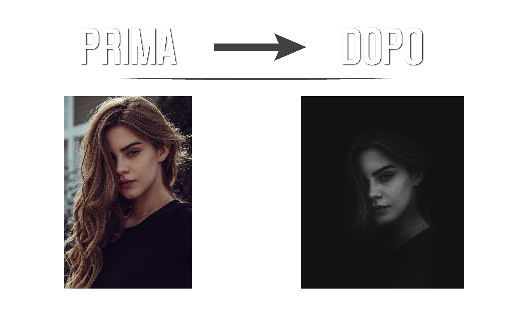
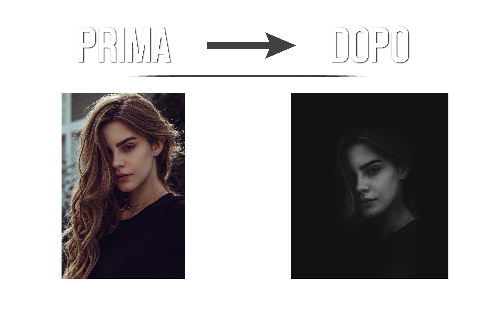

Graphic Design
In questa sezione sono presenti alcuni dei miei lavori di grafica realizzati subito dopo aver concluso il mio percorso di studi. Si tratta di lavori realizzati per attività commerciali e per siti web, trattando svariate tematiche e adattando molteplici stili a seconda dell'esigenza del cliente e delle finalità. I software utilizzati per questo genere di lavori nello specifico fanno parte della suite di Adobe.

Promozione attività
Materiale promozionale realizzato per la nuova gestione di una palestra nella provincia di Taranto. Qui di seguito vengono mostrati copertina della pagina Facebook insieme al biglietto da visita con i contatti del titolare e dell'attività.
Impaginazione
L'impaginazione è l'operazione per mezzo della quale tutti gli elementi che compongono uno stampato vengono posizionati, dimensionati e organizzati nello spazio-formato. Gli elementi sono: i blocchi di testo, i titoli e sottotitoli, le illustrazioni, gli elementi decorativi, quali filetti, trame retinate, fondini. Per giungere all'impaginazione in senso operativo si effettuano normalmente delle prove, che portano alla creazione di un layout di pagina. L'operazione di impaginazione prevede quindi delle scelte tecniche e delle scelte grafico-estetiche e, per questo motivo, il termine in alcuni casi è sovrapponibile a quello di grafica e di composizione.
Doppia esposizione
In cinematografia e fotografia, l'esposizione multipla consiste nella creazione di un'immagine attraverso la sovrapposizione di più immagini ottenute in diverse esposizioni. Questa tecnica può essere utilizzata per creare immagini "spettrali", per aggiungere oggetti o persone in origine assenti, o per altri generi di fotomontaggio.
Manipolazione fotografica
La manipolazione fotografica è un processo in cui una fotografia viene modificata in qualche modo che può essere abbastanza sottile o abbastanza drammatica. Mentre questi tipi di cambiamenti sono stati spesso realizzati in passato attraverso alterazioni fisiche al negativo o alla stampa di un’immagine, i miglioramenti della tecnologia hanno reso l’uso dei computer molto più comune. La manipolazione fotografica può essere eseguita per scopi artistici, per rendere un’immagine unica e combinare la bellezza artistica e l’immaginazione con immagini reali.
 


Cinemagraph
Una cinemagrafia è una fotografia digitale in cui è presente un piccolo movimento, spesso ripetitivo. Di solito, sono pubblicate come immagini in formato GIF, e possono dare all'osservatore l'illusione di osservare un video. Possono essere prodotte con una serie di foto o una breve registrazione video, convertite appunto grazie ad appositi software nel formato GIF. Inoltre, generalmente il movimento riguarda solo un piano della fotografia (per sottolineare il contrasto con il resto della foto, immobile), ed è prodotto tramite la ripetizione infinita della stessa sequenza di fotogrammi. Il termine "cinemagraph" fu coniato dai fotografi statunitensi Kevin Burg and Jamie Beck. Per una questione di comodità per la dimostrazione la qui presente cinemagraph è stata esportata in formato video.
Effetto glitch su Photoshop
La glitch art è la riproduzione volontaria degli errori dei vecchi media. Creare glitch art significa creare “incidenti” intenzionali. Come la pixel art, che trae ispirazione dai limiti della tecnologia vintage, la glitch art sfrutta i difetti della tecnologia dell'era precedente per produrre immagini inquietanti ed enigmatiche. Per una questione di comodità per la dimostrazione è stato esportato tutto in formato video.